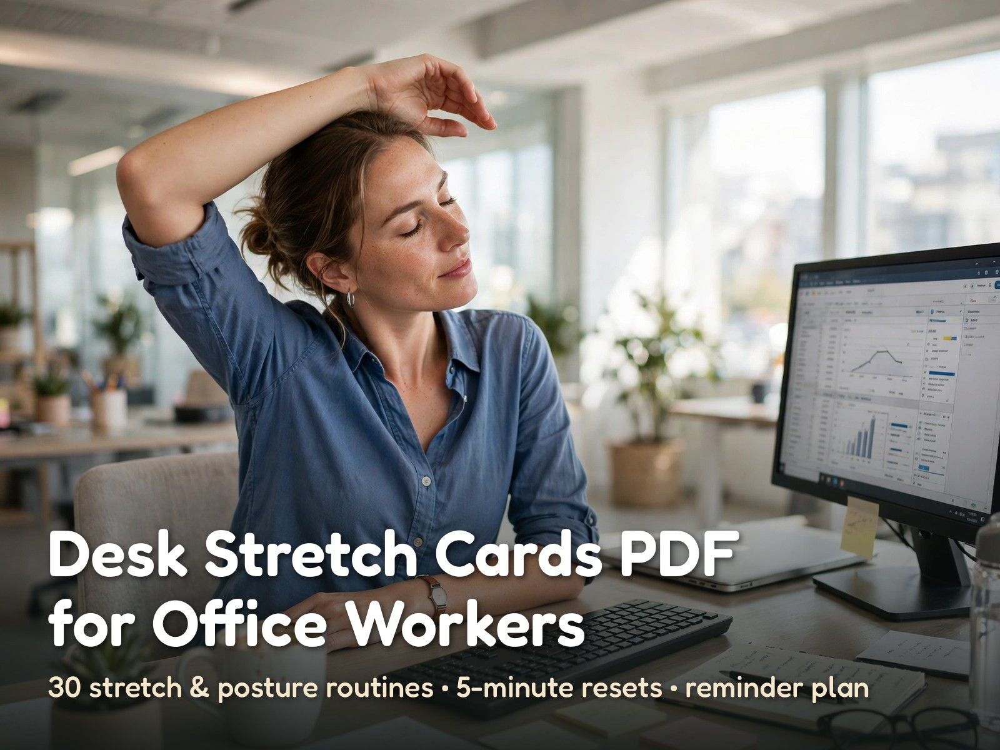

$7 USD — instant download
Desk Stretch Cards PDF for Office Workers — 30 Stretch & Posture Routines, 5-Minute Resets & Reminder Plan
Get it on GumroadDesk stiffness is not a character flaw — it is what a body does when it holds one shape for eight hours. This pack gives you thirty small, specific ways to change the shape: printable stretch and posture routine cards you can do seated at your desk or standing beside it, in work clothes, each in under a minute, with no video required.
The 30 routine cards are grouped six each for neck, shoulders and chest, back and spine, hips and legs, and eyes, breath and full reset. Every card carries exact instructions, a dose in reps and hold times, and what you should feel — no guessing. From the cards, five ready-made 5-minute routines are already assembled for real moments of the workday: Morning Arrival, Neck & Shoulders Rescue, Post-Meeting Reset, Afternoon Slump Breaker and End-of-Day Unwind, each a timed sequence you can start without thinking.
Knowing stretches is not the hard part; remembering them at 3 p.m. is. The hourly reminder plan maps one micro-break per hour onto a real eight-hour day and shows how to make reminders actually stick — anchors, timers and a tick-box streak. A desk setup check covers six furniture adjustments (screen height, chair, back support, keyboard position, second screen, standing-desk rhythm) that mean the cards have less damage to undo, and a week-at-a-glance sheet plans your first two weeks so the rhythm becomes automatic.
These are gentle comfort and mobility routines for desk workers, not a treatment for pain or injury. Stretch to mild tension, never to pain — and if you have a neck, back, joint or eye condition, check with a healthcare professional first. Print the routines and pin them near your screen, or keep the PDF on your phone; either way, the whole system is designed to survive a real job, not an ideal one.
This is a digital download — no physical item will be shipped. For personal use; please do not redistribute or resell the file.